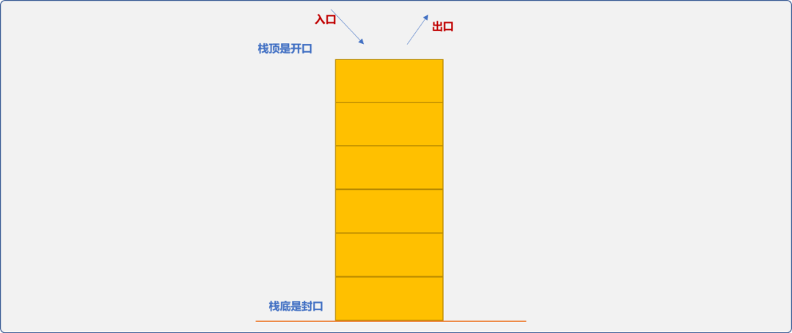
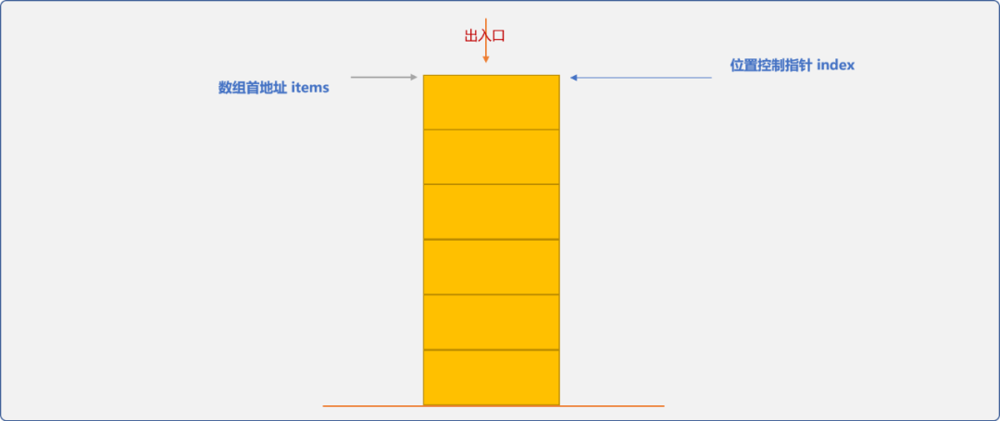
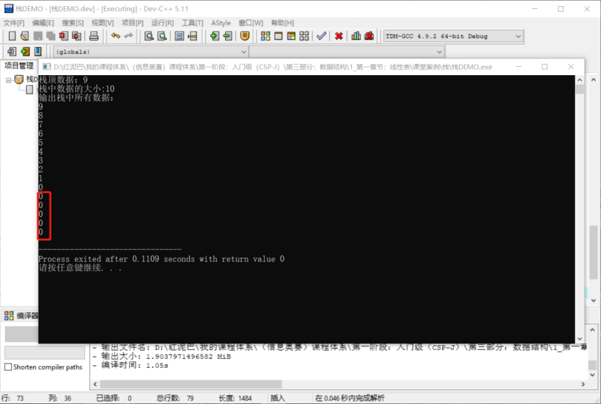
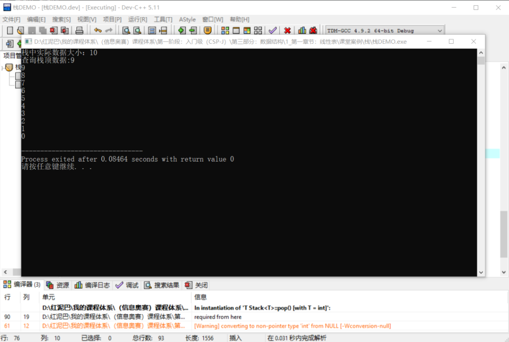
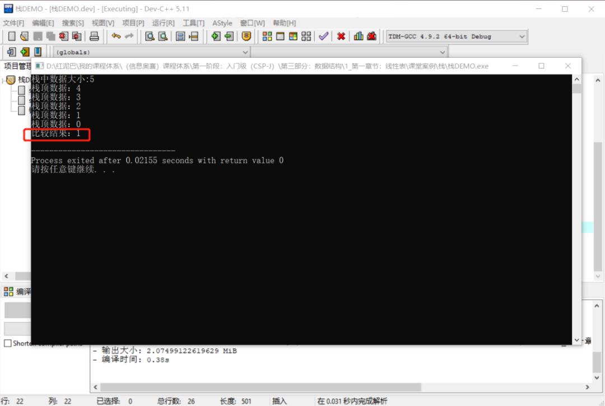
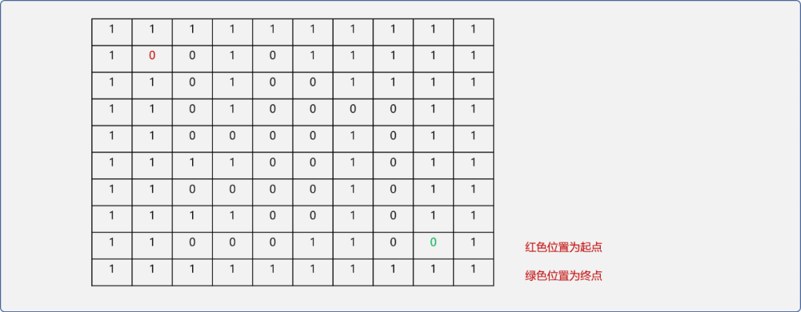
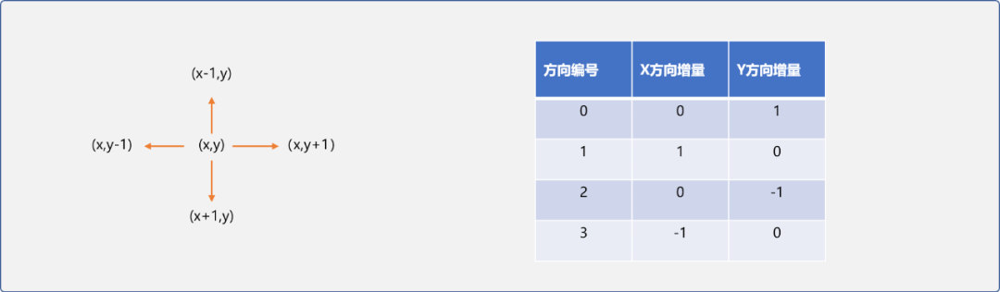
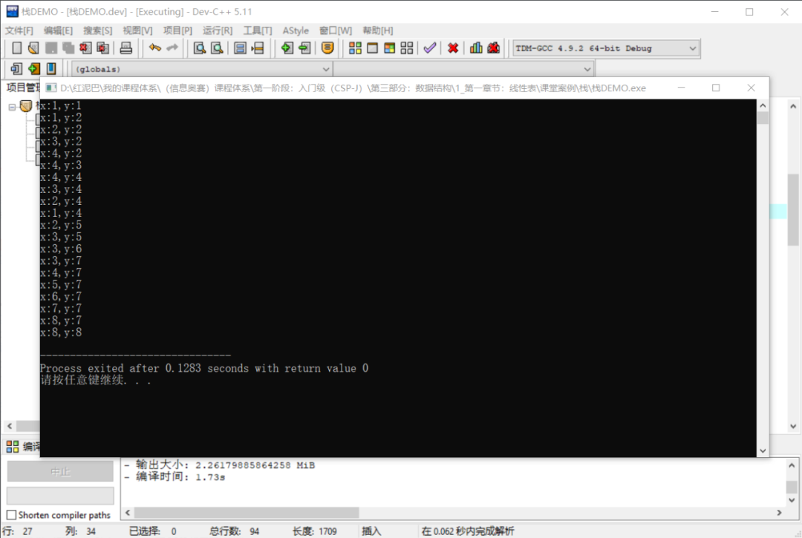
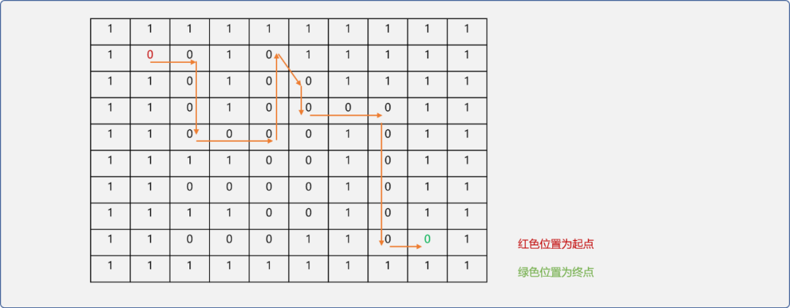

C++ 栈和典型的迷宫问题
1. 前言
栈是一种受限的数据结构，要求在存储数据时遵循先进后出（Last In First Out）的原则。可以把栈看成只有一个口子的桶子，进和出都是走的这个口子（也称为栈顶），封闭的另一端称为栈底。

什么时候会用到栈？
现实世界里，类似于栈的存储现象很普通。
当我们需要同时存储经常和不经常使用的物品时，我们总是把不经常使用的物品先放到箱子的最里层，把经常使用的物品放到箱子的最外层。这是典型的栈存储思想。
在编程的世界里，可把稍后要用的数据存储在栈底，把当前需要用的数据存储在栈顶。或者说，如果数据A依赖数据B，也就是必须先处理完B后才能处理A。可以把数据B存储在栈顶，数据A存储在栈底。
栈的抽象数据类型：
栈最基本的操作是入栈、出栈，除此之外，还有查看栈顶、检查栈是为空、检查栈已满……操作。
栈有 2 种实现方案：
- 顺序存储。
- 链式存储。
2. 顺序存储
顺序存储指使用数组模拟拟栈实现。
2.1 初始化栈
数组是开放式的数据存储结构，为了保证向数组中存储数据时，遵循栈的存储理念，栈类需要做 2 点准备：
- 对外隐藏数组(私有化)。
- 栈内部确定存储位置。入口（栈顶）位置可以从数组的首地址开始，也可以从数组的尾地址开始。

template <typename T>
class Stack {
private:
//数组地址（这里使用动态创建数组）
int *items;
//用来控制数组中的有效存储位置（位置控制指针）
int *index;
//栈的实际数据的大小
int size=0;
public:
//构造函数
Stack(int stackSize) {
this->items=new T[stackSize];
this->size=stackSize;
//从数组的首地址开始存储
this->index=this->items;
}
//入栈
void push(T data);
//出栈
T pop();
//查看栈顶数据
T getTop();
//是否为空
bool isEmpty();
//是否满了
bool isFill();
};
2.2 栈的状态
栈有 2 种状态：
- 可用：入栈时，栈中有空位置，出栈时，栈中有数据，此时栈为可用状态。
- 不可用：出栈时，如果栈为空，或入栈时，栈已满，此时栈为不可用状态。
为了保证入栈和出栈能正常工作，先要实现状态检查函数。
2.2.1 是否为空
这个算法很简单，只需要检查位置控制指针是不是为构建栈时的最初状态。
2.2.2 是否已满
只需要检查栈的大小是否和数组的实际存储大小相等。或者检查位置控制指针是否已经到达数组尾部。
2.3 入栈和出栈
2.3.1 入栈
入栈操作需要检查栈是否有空位置。如果有，存储在位置控制指针所指向位置，然后让位置控制指针指向下一个可用位置。
//入栈
bool push(T data) {
if(this->isFill()) {
//栈满了，不能存储
return 0;
}
//存储至位置控制指针所指位置
*(this->index)=data;
//移动
this->index++;
this->size++;
return 1;
}
2.3.2 出栈
出栈时需要检查栈是否为空，为空时，出栈失败。不为空时，把位置控制指针向后移动到数据所在位置，然后得出数据。
//出栈
T pop() {
if(this->isEmpty()) {
//栈为空
return NULL;
}
this->index--;
this->size--;
return *(this->index);
}
2.3.3 其它函数
返回栈中实际数据的函数。
仅查询栈顶数据，不从栈中删除数据。
2.3.4 测试入栈出栈
栈存储会导致存入的顺序和输出的顺序是相反的。
int main(int argc, char** argv) {
Stack<int> myStack(10);
//向栈中压入数据
for(int i=0; i<15; i++) {
myStack.push(i);
}
int top=myStack.getTop();
cout<<"栈顶数据："<<top<<endl;
int size=myStack.getSize();
cout<<"栈中数据的大小:"<<size<<endl;
cout<<"输出栈中所有数据："<<endl;
for(int i=0; i<15; i++) {
cout<<myStack.pop()<<endl;
}
return 0;
}
输出结果：

向栈中添加了 15 次数据，因栈的容量只有 10，最终输出只有 10 个有效数据。最后的 5 个 0 表示出栈失败。
2.4 小结
因顺序栈基于数组，实现过程相对而言较简单，但受限于数组的物理特性，在压入的数据多于栈内部大小时，会出现数据溢出问题。虽然可以采用扩容算法，但同时增加了代码的维护量。
3. 链式存储
链式存储是基于结点的存储方式，数据在物理结构上是不连续的。链表存储的优点是可以自行动态扩容，不需要算法层面的支持。
链式存储的流程：
3.1 结点类型
结点类型和单链表相同，只需要数据域和存储下一个结点的指针域。
template <typename T>
class Node {
public:
T data;
Node *next;
Node(T data) {
this->data=data;
this->next=NULL;
}
};
3.2 初始化
创建链表时，通常会增加一个空白头结点作为标志结点，在构建链表栈时是不需要的。
template <typename T>
class Stack {
private:
//头结点指针
Node *head;
//栈中实际数据的大小
int size;
public:
//构造函数
Stack() {
//不需要空白头结点
this->head=NULL;
this->size=0;
}
//入栈
bool push(T data) ;
//出栈
T pop() ;
//查看栈顶数据
T getTop() ;
//得到栈中的实际数据大小
int getSize(){
return this->size;
}
};
3.3 入栈、出栈
链表的数据插入方案有头部插入和尾部插入两种方案。在模拟栈时须保证数据的维护只能在一端进行，可以有 2 种方案：
- 数据的插入和删除在头部进行。
- 数据的插入和删除在尾部进行。
本文以头部插入实现入栈和出栈算法。
3.3.1 入栈
链式栈不需要考虑栈是已经满的问题。入栈实现流程：
- 创建一个新结点对象。
- 原来的头结点成为新结点的后驱结点。
- 新结点成为头结点。
//入栈
bool push(T data) {
//创建新结点
Node<T> *newNode=new Node<T>(data);
if(newNode){
//原来的头结点成为新结点的后驱
newNode->next=this->head;
//新结点成为头结点
this->head=newNode;
this->size++;
return 1;
}else{
return 0;
}
}
3.3.2 出栈
链式栈的出栈操作需要判断栈是否为空。如果不为空刚取出头结点数据，并把结点从链表中删除。实现流程：
//出栈
T pop() {
Node<T> * node=NULL;
T data;
if(this->head){
//获取头结点
node=this->head;
//得到数据
data=node->data;
//原来头结点的后驱成为新头结点
this->head=this->head->next;
//删除结点
delete node;
this->size--;
return data;
}else{
//链表为空
return NULL;
}
}
为了方便查询栈顶数据，需要提供一个查询栈顶数据的操作。
3.3.3 测试链式栈
int main(int argc, char** argv) {
Stack<int> stack ;
//入栈
for(int i=0; i<10; i++) {
stack.push(i);
}
cout<<"栈中实际数据大小："<<stack.getSize()<<endl;
cout<<"查询栈顶数据:"<<stack.getTop()<<endl;
//出栈
for(int i=0; i<10; i++) {
cout<<stack.pop()<<endl;
}
return 0;
}
执行结果：

4. STL 中的栈
实际应用时，可以使用STL的stack容器。除了上述的基本操作外，stack容器还提供比较操作，这些操作可以被用于栈与栈之间的比较， 相等指栈有相同的元素并有着相同的顺序。
#include <iostream>
#include <stack>
using namespace std;
int main(int argc, char** argv) {
stack<int> myStack;
//入栈
for(int i=0;i<5;i++){
myStack.push(i);
}
cout<<"栈中数据大小:"<<myStack.size()<<endl;
//出栈
for(int i=0;i<4;i++) {
cout<<"栈顶数据："<<myStack.top()<<endl;
myStack.pop();
}
cout<<"栈顶数据："<<myStack.top()<<endl;
stack<int> myStack_;
myStack_.push(0);
bool res= myStack_==myStack;
cout<<"比较结果："<<res<<endl;
return 0;
}
输出结果：

5. 栈的应用
总是在想，如果没有栈，编程将如何进行，可想而知，栈的重要性。函数调用、递归算法……无处不有栈的身影。下面将通过一个典型的案例加深对栈的理解。
5.1 迷宫问题
迷宫问题描述：在一个错综复杂的迷宫世界，有一个入口，有一个出口。在入口位置有一只小老鼠，出口位置有一块奶酪。要求通过编码的方式帮助小老鼠在入口到出口之间找到一个可行的路径。
迷宫问题是一类典型问题，解决此类问题的关键思想包括：
- 试探过程：每到达一个当前位置（第一个当前位置为入口），记录此当前位置四周可尝试的其它位置，然后选择其中一个位置作为当前位置尝试着继续前进。
如下表格，设值为0的单元格为可通行，1为不可通行。值标识为红色的单元格表示当前位置，在继续前进时，记录其左、右、下三个可行位置。并选择右边位置为新的当前位置。
- 回溯过程：当在前进时被阻碍后，退到记录表中下一个可行位置再试。重复试探再回溯至到找到出口。
如上图所示后继续选择右行，则发现被阻碍。
这时就需要在已经存储的可行位置选择一个，这步操作称为回溯。
很明显，每次记录的可尝试位置是在回溯后使用的，符合先进后出的存储理念。栈在迷宫问题中用来存储可试探的位置。
实现流程：
- 使用二维数组模拟迷宫。在二维数组中用
0表示可通行，1表示不可通行。
- 初始化迷宫。为了简化问题，会把二维数组的第一行和最后一行，第一列和最一列中的所有单元格赋值
1，表示墙面。
如下图，设置入口位置(1,1)、出口位置为(8,8)。

//全局声明
int nums[10][10]= {
{1,1,1,1,1,1,1,1,1,1},
{1,0,0,1,0,1,1,1,1,1},
{1,1,0,1,0,0,1,1,1,1},
{1,1,0,1,0,0,0,0,1,1},
{1,1,0,0,0,0,1,0,1,1},
{1,1,1,1,0,0,1,0,1,1},
{1,1,0,0,0,0,1,0,1,1},
{1,1,1,1,0,0,1,0,1,1},
{1,1,0,0,0,1,1,0,0,1},
{1,1,1,1,1,1,1,1,1,1},
};
对于二维数组中的任一位置有左、下、右、上 4 个方向，当前位置的坐标与 4个方位的坐标关系如下图所示：

这里定义一个方向结构体，用来存储 4 个方位的增量信息，便于计算。
并且创建 Direction类型数组，用于保存 4 个方向的增量信息。
方向信息，为快速找到当前位置周边的坐标提供了便利。为了存储坐标，这里需要一个坐标结构体：
struct Position {
//x坐标
int x;
//y坐标
int y;
//无参构造
Position() {
}
//有参构造
Position(int x,int y) {
this->x=x;
this->y=y;
}
//判断 2 个坐标是不是同一个位置
bool equals(Position pos) {
return this->x==pos.x && this->y==pos.y;
}
//自我显示
void desc() {
cout<<"x:"<<x<<"y:"<<y<<endl;
}
};
- 创建栈。
用来存储当前位置周边所有可以通行的位置。
这里使用
STL提供的stack容器。别忘记包含<stack>头文件。
- 核心搜索算法。
所有核心代码直接编写在 main函数中，下面代码中使用到了 vector，存储已经搜索到的位置。还有一点要注意，当某个位置被 压入栈中后，要标识为被压入，这里把此位置值设置为 -1。
int main(int argc, char** argv) {
//起点位置
Position startPos(1,1);
//终点位置
Position endPos(8,8);
//保存走过的位置
vector<Position> paths;
//向栈中压入起始位置
mazeStack.push(startPos);
//设置起始位置为已经访问过
maze[startPos.x][startPos.y]=-1;
//临时存储栈顶位置
Position tmp;
while(!mazeStack.empty()) {
//取出栈顶位置
tmp=mazeStack.top();
//删除栈顶数据
mazeStack.pop();
//当前搜索位置存储在 vector 中
paths.push_back(tmp);
//判断是否已经到了终点
if (tmp.equals(endPos)) {
//到达终点，结束
break;
} else {
for(int i=0; i<4; i++) {
//查找当前位置 4 个方向有无可通行位置,并压入栈中
Position nextPos(tmp.x+dirs[i].xOffset,tmp.y+dirs[i].yOffset);
if(maze[nextPos.x][nextPos.y]==0) {
mazeStack.push(nextPos);
//标识为已经被压入，避免重复压入
maze[nextPos.x][nextPos.y]=-1;
}
}
}
}
//显示搜索路径
for(int i=0;i<paths.size();i++){
tmp=paths[i];
tmp.desc();
}
return 0;
}
执行结果：

在演示图中标注出搜索路径，可验证搜索到的路径是可行的。

6. 总结
本文实现了顺序栈和链式栈，简要介绍了STL中的stack容器，并使用它解决了典型的迷宫问题。